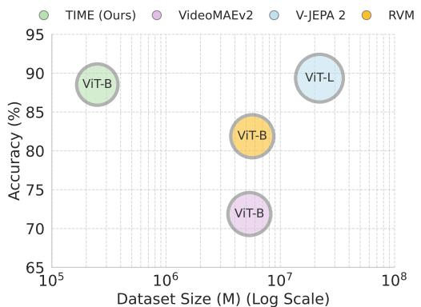
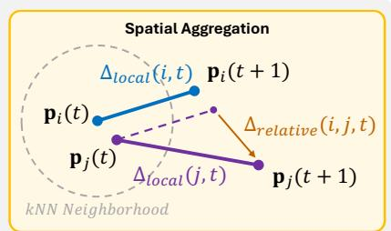

The TIME Machine：它和通用视觉自监督的关系在于：以点轨迹作为遮蔽和重建对象，把运动连续性变成视频预训练信号
高相关；详见方法、贡献和实验边界。
先说结论。它和通用视觉自监督的关系在于：以点轨迹作为遮蔽和重建对象，把运动连续性变成视频预训练信号。


读前定位
先按“视频表征预训练目标”读。这篇的核心不是再做一个视频生成或视频问答系统，而是把点轨迹当作可遮蔽、可重建的运动模态，让模型从运动连续性中学习可迁移表示。
再检查它是否真的通用。重点看 zero-shot 任务覆盖、训练数据规模对照，以及收益是否来自 point-track 监督本身，而不是更强数据、更长训练或更大的 backbone。
核心问题
视频自监督长期夹在两类目标之间：重建像素容易学到低层纹理，图文对齐又容易被 caption 覆盖范围限制。TIME Machine 选择第三条路：直接让模型预测物体和区域随时间移动的轨迹，把 motion 当成比字幕更原生的视频监督信号。
因此它要回答的问题是：如果视觉系统只从点轨迹的时序结构中学习，是否能形成足够通用的 motion-centric representation，并迁移到不止一个视频理解任务。
方法拆解
以点轨迹作为遮蔽和重建对象，把运动连续性变成视频预训练信号
读方法时可以拆成三层：第一层是 point-track 抽取和表示格式，决定监督信号的噪声与覆盖；第二层是 MAE 式遮蔽比例、重建目标和时序上下文，决定模型是否学习运动规律而不是记忆局部插值；第三层是 TIME embedding 如何进入下游 zero-shot 或迁移评估，决定它是不是一个可复用表征。
主要贡献
高相关；详见方法、贡献和实验边界。
对通用视觉自监督更关键的是，它把“运动”从视频模型的辅助线索提升为主训练目标：不依赖人工标签，不依赖 caption，也不要求先把视频转成语义问答。这个设定适合和 V-JEPA、VideoMAE、masked feature prediction、world-model 预训练放在同一条谱系里比较。
实验看点
实验部分先看作者怎样做 zero-shot transfer，再看是否控制训练数据量、backbone 规模、训练步数和 point-track 质量。只要这些对照不完整，就不能把性能差异全部归因给 motion MAE 目标。
最值得抠的是两类消融：一是 mask/reconstruction 目标和普通视频 MAE、光流/轨迹预测之间的差异；二是跨数据、跨任务迁移是否仍保持趋势。如果只在运动显著的数据或任务上强，结论应收窄为 motion-biased representation，而不是完整通用视频表征。
局限与读法
point-track 质量、合成到真实视频的迁移、静态外观语义不足，是这条路线最需要警惕的三类边界。
它与通用视觉自监督的关系在于：把视频中的运动连续性变成可扩展预训练信号。 精读时建议先看方法图和数据构造，再看 zero-shot 表格，最后看消融；不要只拿一句“少 4 个数量级数据接近 SOTA”当结论。